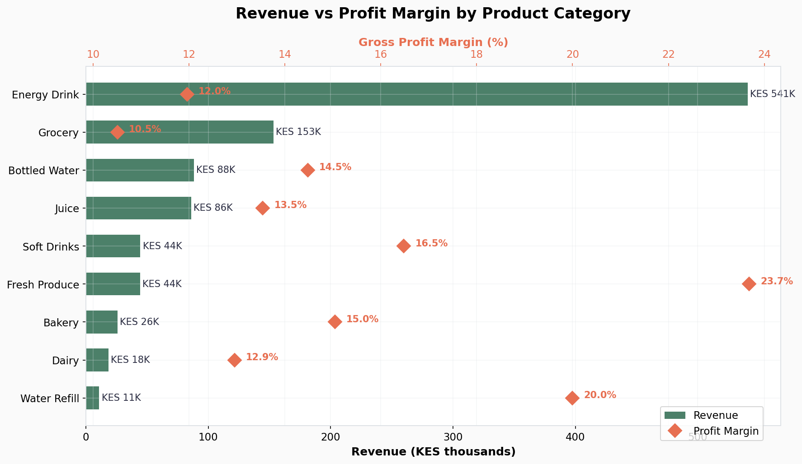

Empirical evidence from 23 months of operations (2,188 transactions) transformed into an interactive decision aid to stabilize monthly net cash flow for Kasee Shop, Thika.
Mathematical reconciliation from January 2025 to November 2026 across 2,188 customer sales transactions.
Test shifting working capital from low-margin energy drinks into high-margin produce and clean water refills.
Real-time debtor monitoring across all 12 institutional and commercial accounts in Thika.
| Customer / Institution | Customer Type | Outstanding Debt | Agreed Credit Limit | Status | Operational Action |
|---|
"If an institutional or retail customer exceeds their limit, they MUST clear their previous invoice balance before any new goods are released on credit."
Visualizing why high-margin categories (fresh produce & water refills) outperform volume-heavy energy drinks.
Click on any of the 10 capstone visual exhibits to inspect full-resolution findings.

Energy drinks dominate revenue at 53.4% but produce only 11.96% margin, while Fresh Produce yields 23.68% and Water yields 20.0%.
Access the formal peer-reviewed PDFs, spreadsheet decision aids, and presentation slide deck.
19-Page comprehensive LaTeX academic document covering all 8 chapters, methodology, and appendices.
Download PDF (1.3 MB)2-Page plain-language executive summary prepared for shop owner Mr. John Nzioka.
Download PDF (193 KB)1-Page counter laminate till card with approved customer credit limits and Swahili scripts.
Download PDF (145 KB)The 4-sheet operational spreadsheet handed over to Kasee Shop for weekly till tracking.
Download Excel (.xlsx)10-Slide 16:9 widescreen presentation deck prepared for the Capstone defense.
Download Slides (815 KB)23 Months of raw transactions, stock purchases, and product price lists.
Download Dataset (.xlsx)